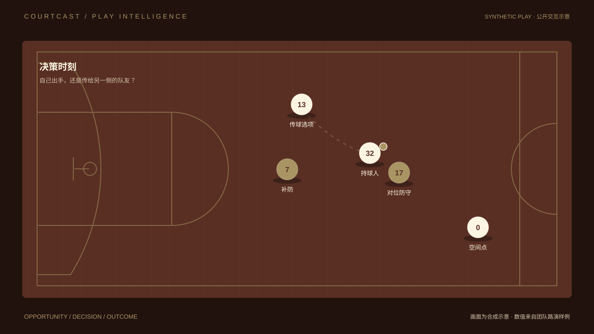

COURTCAST / PLAY INTELLIGENCE
用你的眼睛，
看懂每一球。
不止看见发生了什么。
从比赛画面出发，理解每一次选择。
FROM REPLAY TO REASONING
PLAY 01 / 决策时刻
弗拉格 · 投还是传
DAL 103— HOU 107Q4 ·

先看局面，再看估算。
公开原型使用合成球场呈现交互流程，数值沿用团队路演样例。球员位置、框线与路线均为示意。
继续了解 CourtCast
用你的眼睛，看懂每一球。
向上滚动，回看最后一幕